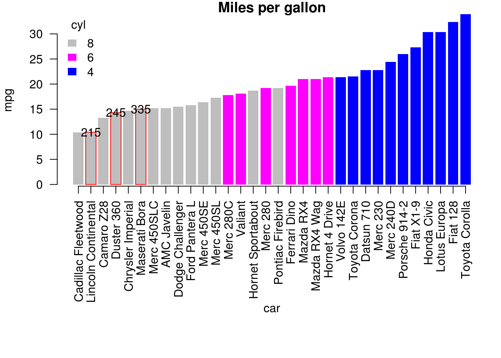
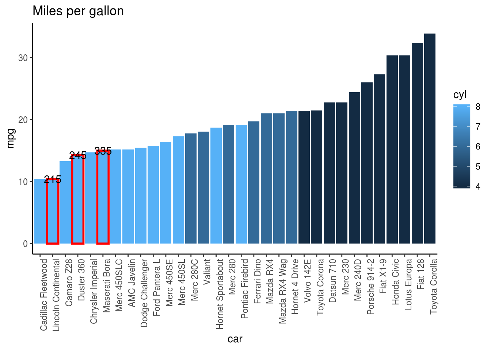

4 柱状图的边框
题目：
下图来自Economisit：

请问，如何在柱状图里指定的某些柱子上显示边框？
N 版
df.o <- df[order(df[,1]), ]
df.o$bd <- "NA"
df.o$bd[cl_red] <- "red"
par(mar = c(12, 4, 1, 1), las = 1)
barplot_car <-
barplot(df.o$mpg, border = df.o$bd,
col = df.o$cyl, ylab = 'mpg',
main = 'Miles per gallon')
legend('topleft', legend = unique(df.o$cyl),
fill = unique(df.o$cyl), title = 'cyl',
border = NA, bty = 'n')
text(x = barplot_car[cl_red],
y = df.o$mpg[cl_red],
labels = df.o$hp[cl_red])
mtext('car', 1, 8)
axis(1, at = barplot_car, labels = df.o$car,
las = 2)
T 版
require(ggplot2)
require(dplyr)
df.sort = df %>%
arrange(mpg)
df.sort %>%
ggplot(aes(x=car,y=mpg,fill=cyl))+
geom_col()+
geom_col(data= df.sort[cl_red,],
color="red", size=1)+
geom_text(data= df.sort[cl_red,],
aes(label=hp))+
scale_x_discrete(limits= df.sort$car) +
theme_classic()+
theme(axis.text.x =
element_text(angle = 90, hjust = 1))+
ggtitle("Miles per gallon")